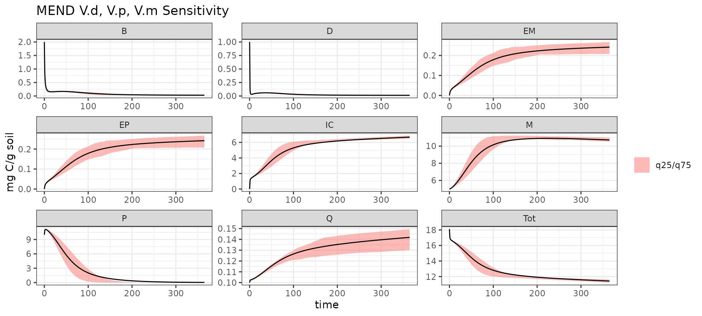
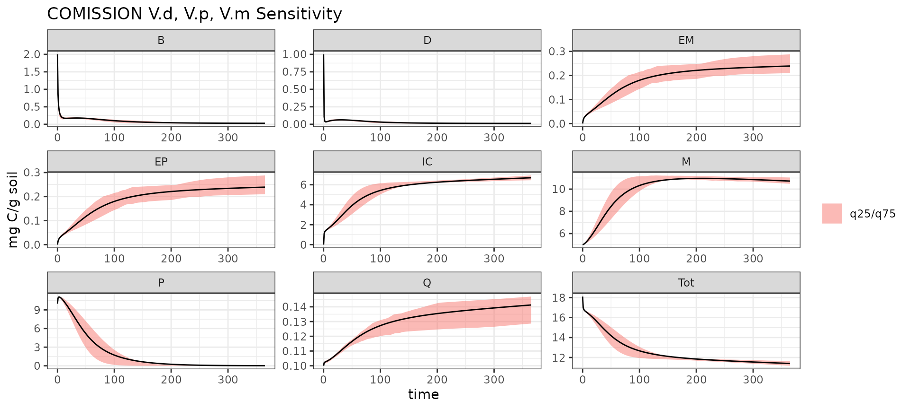
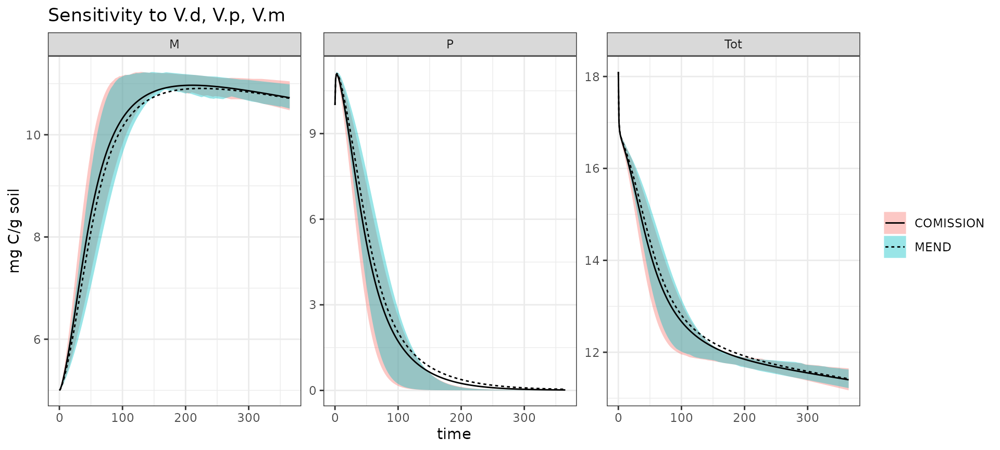
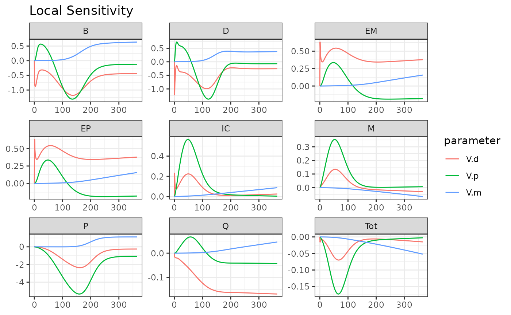

Senstivity Analysis
Senstivity-Analysis.RmdThe objective of this example is to show users how to do use the
MEMC helper functions (memc_sensrange,
memc_sensfunc, and format_sensout) to easily
complete and visualize results from a sensitivity analysis.
Global Sensitivity
We will be using the memc_sensrange which is based on
the FME::sensRange to run two different model
configurations.
Start by setting up the parameters to vary.
pars <- c("V.d" = 3.0e+00,"V.p" = 1.4e+01,"V.m" = 2.5e-01)Set up a data frame defining the parameter ranges to sample from.
prange <- data.frame(min = pars - pars * 0.75,
max = pars + pars * 0.75)Define the time vector to solve the model at.
time <- seq(0, 365)Use memc_sensrange to complete the sensitivity analysis
for the MEND model.
MENDsens_out <- memc_sensrange(config = MEND_model, t = time,
pars = pars, parRange = prange, dist = "latin", n = 50)
mend_to_plot <- format_sensout(MENDsens_out)
mend_to_plot$name <- "MEND"
ggplot(data = mend_to_plot) +
geom_ribbon(aes(time, ymin = q25, ymax = q75, fill = "q25/q75"), alpha = 0.5) +
geom_line(aes(time, Mean)) +
facet_wrap("variable", scales = "free") +
labs(y = "mg C/g soil",
title = "MEND V.d, V.p, V.m Sensitivity") +
theme(legend.title = element_blank())
Run the sentivity analysis with the COMISSION model configuration.
COMISSIONsens_out <- memc_sensrange(config = COMISSION_model, t = time,
pars = pars, parRange = prange, dist = "latin", n = 50)
comission_to_plot <- format_sensout(COMISSIONsens_out)
comission_to_plot$name <- "COMISSION"
ggplot(data = comission_to_plot) +
geom_ribbon(aes(time, ymin = q25, ymax = q75, fill = "q25/q75"), alpha = 0.5) +
geom_line(aes(time, Mean)) +
facet_wrap("variable", scales = "free") +
labs(y = "mg C/g soil",
title = "COMISSION V.d, V.p, V.m Sensitivity") +
theme(legend.title = element_blank())
Compare the output between the two models.
to_plot <- rbind(comission_to_plot, mend_to_plot)
to_plot <- to_plot[to_plot$variable %in% c("P", "M", "Tot"), ]
ggplot(data = to_plot) +
geom_ribbon(aes(time, ymin = q25, ymax = q75, fill = name), alpha = 0.4) +
geom_line(aes(time, Mean, linetype = name)) +
facet_wrap("variable", scales = "free") +
labs(y = "mg C/g soil",
title = "Sensitivity to V.d, V.p, V.m") +
theme(legend.title = element_blank())
Local Sensitivity
Test the local effect parameters have on model output with
memc_sensfun, this is based on
FME::sensFun.
Select the parameters to test, we will use the same parameters used in the global sensitivity analysis.
pars <- c("V.d" = 3.0e+00,"V.p" = 1.4e+01,"V.m" = 2.5e-01)Run the local sensitivity analysis.
out <- memc_sensfunc(config = MEND_model, t = time, pars = pars)Format output into a dataframe that is easy to plot.
to_plot <- format_sensout(out)
ggplot(data = to_plot) +
geom_line(aes(time, value, color = parameter)) +
facet_wrap("variable", scales = "free") +
labs(y = NULL, x = NULL, title = "Local Sensitivity") 